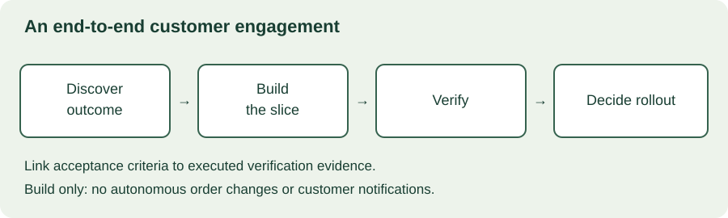

MODULE 04 · ADVANCED FIELD ENGINEERING
This final capstone combines the academy's skills in a fictional customer engagement. You will turn an ambiguous request into a bounded solution, demonstrate failure handling, negotiate a change, and defend a launch recommendation. Unlike the earlier capstone, this assessment also includes security boundaries, AI scope, competing commitments, and an executive business case.
Your assignment
Act as the FDE leading Harbor's exception-review pilot. Produce an inspectable evidence pack and a ten-minute customer decision briefing. Use synthetic data only. This page supplies the scenario, exercises, and self-assessment; it does not implement your project or certify production readiness.
- Define the customer outcome and acceptance criteria.
- Build a narrow working slice with meaningful tests.
- Handle a scope change and a launch-blocking defect.
- Prepare rollout, ownership, measurement, and executive decisions.
Allow 6–10 hours over several sessions. Review Chapters 12–23 as needed. Keep plans, executed tests, observations, and simulated outcomes clearly distinguished.
24.1 Customer brief
Harbor operates two warehouses, East and West. Coordinators investigate shipment exceptions by comparing event records with notes. The sponsor wants a pilot in East within four weeks and asks for “AI explanations and automatic customer notifications.” Operations wants faster review; security requires warehouse-scoped access; support needs a workflow it can diagnose without the original developer.
The baseline is a manual evidence checklist. For this simulation, assume 2,000 eligible cases monthly and a candidate six-minute reduction per adopted case. These are planning inputs, not observed results. Validate any benefit claim through the measurement plan you design.
| Constraint | Capstone requirement |
|---|---|
| Scope | Start with an evidence-review workbench for East. No automatic external messages or order changes. |
| Identity | Use explicit synthetic principals and server-side or equivalent trusted policy enforcement in the prototype. |
| Data | Events may be duplicated, delayed, malformed, or arrive out of order. |
| Operations | Show stale or unavailable evidence clearly and preserve a manual fallback. |
| Ownership | Name accountable roles for launch, support, access, and benefit measurement. |
If you implement only a browser demonstration, label authorization as simulated and explain the trusted enforcement required in a deployed system. Hiding a button is not evidence of access control. Do not send synthetic or real data to an external AI provider as an implicit part of this exercise; a deterministic draft is sufficient for the core slice.
24.2 Discovery and success contract
Draft ten discovery questions, then record explicit assumptions for unanswered ones. Cover the user's decision, source authority, freshness, identity, operational impact, and ownership. Identify the difference between the sponsor's requested feature and the workflow outcome.
Write acceptance criteria that can be checked. For example: a permitted East coordinator can inspect an East exception; a West principal cannot read that exception through either the main view or an export path; replaying the same source event does not create a second logical event; missing evidence is shown as missing rather than inferred as success.
Define a quality guardrail as well as a time target. Faster review is not a win if it increases incorrect resolutions. Separate the criteria for a technical prototype, a supervised pilot, and a broader launch.
24.3 Architecture and working slice

Compare two credible designs before choosing one. Keep the comparison tied to the constraints: data freshness, deployment environment, support cost, and time to validate. Show identity, ingestion, storage, retrieval, UI, and observability boundaries. Explain which component enforces authorization and which data is authoritative.
Implement one vertical slice: ingest synthetic events, retrieve the permitted evidence for an exception, and display its status and uncertainty. Use the stack you can explain and test. Include setup instructions, fixtures, and a repeatable verification command or manual procedure. A diagram alone does not satisfy the working-slice requirement.
{"event_id":"evt-001","exception_id":"ex-101","warehouse":"East","occurred_at":"2026-10-01T10:00:00Z","type":"departure"}
{"event_id":"evt-001","exception_id":"ex-101","warehouse":"East","occurred_at":"2026-10-01T10:00:00Z","type":"departure"}
{"event_id":"evt-002","exception_id":"ex-101","warehouse":"East","occurred_at":"2026-10-01T09:45:00Z","type":"scan"}
{"event_id":"evt-003","exception_id":"ex-202","warehouse":"West","occurred_at":"invalid","type":"scan"}The first two rows intentionally duplicate an event. The third arrives later but occurred earlier. The last has an invalid timestamp. Define whether invalid records are rejected or quarantined and how operators discover them. Do not silently repair an unknown timestamp or treat ingestion order as event order.
24.4 Verification evidence
Create a test matrix with input, expected behavior, actual observation, and evidence location. Include a positive path and a negative path for each material boundary. Record the version tested and distinguish tests you ran from tests you propose for later.
| Case | Evidence expected |
|---|---|
| Duplicate and concurrent retry | One logical event, with behavior explained under concurrent requests |
| Out-of-order arrival | Event chronology preserves the actual timestamps |
| Malformed event | Explicit rejection or quarantine with a diagnosable error |
| Cross-warehouse access | Denied through direct lookup and any export path |
| Source outage or stale evidence | Visible degraded state and manual fallback |
| Recovery | Repeatable rollback or restore procedure with integrity checks |
If you add AI, keep it optional and draft-only. Add groundedness, abstention, source-instruction injection, and review-effort checks from Chapter 19. An AI feature does not replace the core deterministic acceptance tests.
24.5 Change request: automatic notifications
At the midpoint, the sponsor asks to send customer notifications automatically because the demo looks convincing. Security has not reviewed message destinations, and operations has not defined approval or recovery for a wrong notification.
Write a response that preserves the relationship and the pilot objective. Explain that external messaging is a new effect with new acceptance criteria. Offer a draft preview or manually reviewed demonstration within the existing scope, and describe the separate decision needed to expand it.
Choose your next step
24.6 Launch inject: access defect
On the day before the pilot, a test reveals that an East user can export a West record by changing an identifier. The ordinary UI correctly hides West records. A stakeholder argues that the issue is unlikely to occur in normal use.
Treat this as a failed access boundary. Pause the affected launch path, preserve appropriate evidence, and follow the relevant incident process if exposure actually occurred. Identify the trusted enforcement gap, repair all equivalent paths, and retest allowed and denied cases. Do not use a hidden button or an average test score to excuse the failure.
Prepare a concise customer update with known impact, current containment, the next investigation step, and the next update time. Avoid speculating about exposure or promising a repair time without evidence. Revisit the launch decision only after the required controls are verified.
24.7 Rollout, ownership, and outcomes
Design a supervised rollout with an explicit cohort, duration, stop conditions, and fallback. Assign roles for support coverage, access changes, operational decisions, and benefit measurement. Show how another engineer can diagnose the prototype from the runbook.
Google's launch guidance describes coordinated readiness reviews and practical checklists tailored to the launch. Apply the principle by linking each readiness item to evidence and an owner, rather than treating a checked box as proof.
Use Chapter 22's business-case approach. At 2,000 monthly cases, six minutes saved, and 60% adoption, modeled released capacity is 120 hours monthly. At 30% adoption it is 60 hours. These are hypotheses to validate with representative cases, correction effort, and quality outcomes; they are not cash-saving commitments.
Prepare a ten-minute briefing: two minutes on the problem and scope, three on design and verification, two on the changes and access defect, and three on rollout, outcomes, and the requested decision. Keep detailed evidence available for questions.
24.8 Interactive readiness review
Mark these items only when the evidence pack supports them. This self-review reports missing evidence. It never authorizes a real deployment, and an unresolved critical defect overrides a high assessment score.
Capstone evidence gates
Ask a peer to inspect at least one test, reproduce the setup, and challenge one business assumption. If working alone, perform the review in a separate session and record the limitations of self-assessment.
24.9 Submission and assessment
Assemble a single evidence index pointing to your discovery contract, architecture decision, runnable slice, test log, scope response, incident response, runbook, and executive brief. Keep the artifacts modular, and label any unfinished work. Use the portfolio rules from Chapter 23 before sharing.
| Assessment area | Points |
|---|---|
| Discovery, scope, and acceptance criteria | 15 |
| Architecture rationale and working implementation | 20 |
| Verification, access boundaries, and failure handling | 25 |
| Scope negotiation and incident communication | 15 |
| Rollout, ownership, and outcome measurement | 15 |
| Executive briefing and honest reflection | 10 |
Suggested learning target: 80/100 with every evidence gate satisfied and no unresolved critical defect. The score is a peer or self-assessment, not an accredited certification. A high total cannot compensate for a missing working slice or failed access boundary.
What a strong submission demonstrates
It narrows the initial request to a useful, testable workflow. It implements and verifies the core slice, handles duplicate and invalid data explicitly, repairs the export access defect, and demonstrates recovery. It offers a constructive alternative to automatic notifications. Its launch recommendation links evidence to owners and stop conditions, and its benefit forecast remains distinct from observed results.
24.10 Review resources
Primary-source launch guidance checked October 29, 2026. Use the academy chapters as working references.
- Google SRE: Reliable Product Launches at Scale — coordinated readiness and practical launch checks.
- Chapter 18: Enterprise security and data boundaries
- Chapter 19: Reliable AI-assisted workflows
- Chapter 22: Executive communication and business cases
- Chapter 23: Portfolio and interview preparation
24.11 Final knowledge check
24.12 Finish the academy
You have reached the final chapter of the 24-chapter learning path. Complete the capstone, record your evidence and remaining gaps, and mark this lesson complete when you have finished its work. The chapter quiz checks concepts; it does not assess the implementation automatically.
Return to the academy overview to review your saved completion and quiz progress. Choose the weakest capability from your capstone feedback as your next deliberate practice task. Preserve the distinction between finishing the course and demonstrating the skills in a real engagement.
Final reflection
Which decision changed most as you gathered evidence, and what will you practice next?